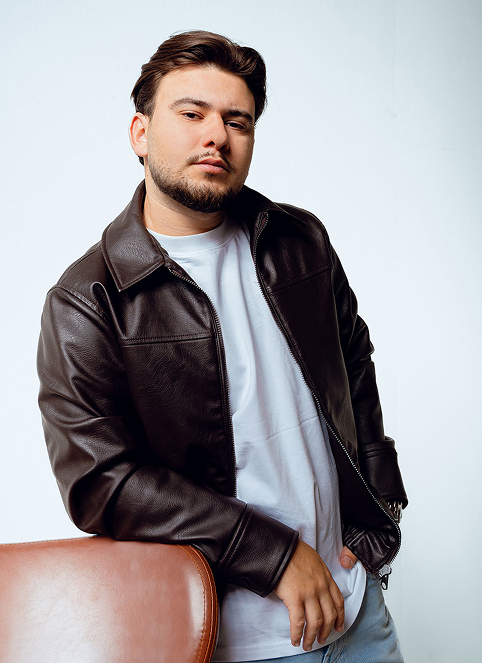

Tým

Dylan Dahan
je zakladatel bookingové agentury zaměřené především na rapovou scénu. V hudebním prostředí se pohybuje přes 6 let a aktivně se podílí na budování a propojování lidí napříč scénou. Specializuje se na booking koncertů a management umělců, se silným citem pro aktuální směr rapové kultury.
Na svém kontě má přes 100 zorganizovaných či vyjednaných koncertů pro své umělce, čímž si vybudoval pevné jméno a silnou síť kontaktů napříč scénou.
Začínal jako manažer rappera Lboy, se kterým dlouhodobě spolupracuje dodnes a právě tahle spolupráce ho přivedla přímo do zákulisí hudebního byznysu a dala mu reálné porozumění tomu, co umělec skutečně potřebuje. V roce 2025 působil jako booking agent v rámci Universal Music Czech Republic, kde se zaměřoval především na booking rapových interpretů.
Live District není jen bookingová agentura, je to platforma propojující streetovou autenticitu s profesionálním hudebním byznysem. Buduje dlouhodobé příležitosti pro umělce, vytváří silná partnerství mezi scénou a značkami a zaměřuje se na strategický růst, ne jen na jednorázové koncerty.